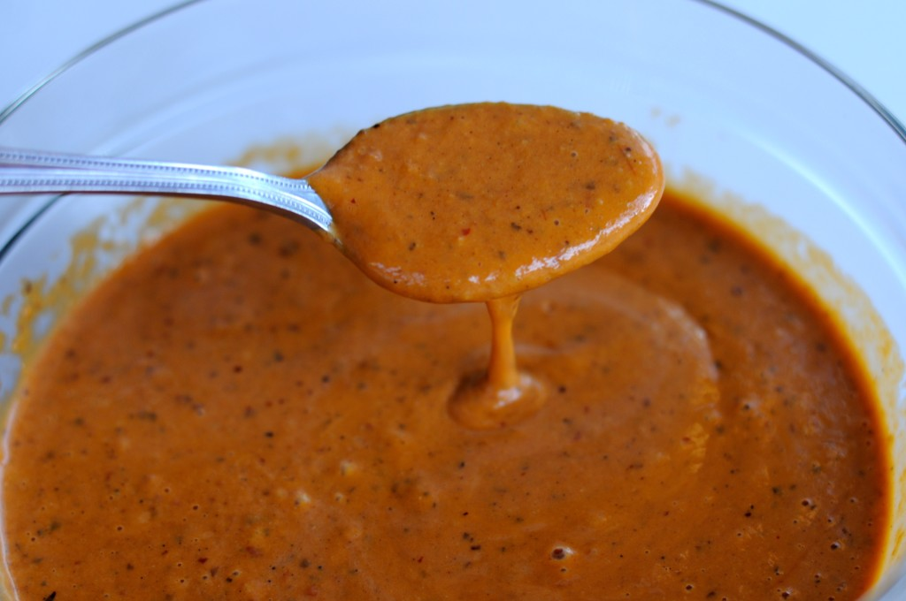

Tasty Orange Hot Salsa

Description
I made this salsa once when I couldn't find my normal chiles and ended up loving it.
Ingredients
- 4 roma tomatoes
- 1 guajillo chile
- 1 ancho chile
- 1 serrano chile (optional for extra spice)
- 1 clove garlic
- 1 teaspoon salt
- 1 teaspoon olive oil
- ¼ white onion
- ¼ cup chopped cilantro
Steps
- Add olive oil to a small cooking pot, coating the bottom. Put on med-high heat.
- Cut tomatoes into quarters. De-stem and rinse the seeds from the chiles. Peel garlic clove and cut in
quarters.
- Add Tomatoes, chiles, garlic, onion and salt to pot. Cook for 8 minutes stirring frequently. Turn on an
exhaust fan so your whole family doesn't start coughing and yelling at you.
- Add 1/2 cup of water, reduce to med heat, stir frequently for 5 more minutes.
- Pour all ingredients into a blender. Add cilantro and 1 cup of ice cubes.
- Blend on med-high until liquid consistency.
- Taste, add salt if needed.
- Enjoy on tacos, with chips, or anything really.
- Refrigerate when you can't eat anymore. Rest well knowing that after spending a day in the fridge it
tastes
even better.